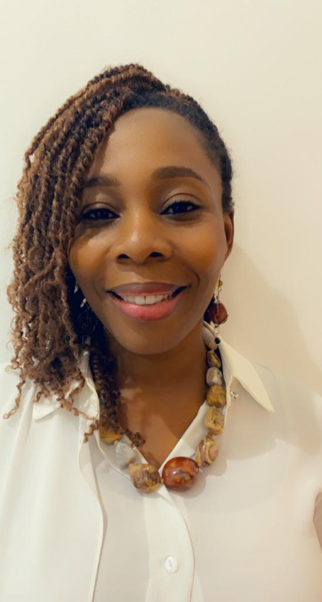

ADAEZE
NWAGWU
Executive Director
at Tenderville Schools

Adaeze is an Executive Director of Tenderville Nursery and Primary School located in Lekki Phase 1, Lagos. She is responsible for developing and implementing high-quality professional development that aligns with the school’s vision, design, monitoring and evaluating curriculum in collaboration with teachers and ensuring that they adhere to set standards.
She is also responsible for setting goals for curriculum and professional development. She is dedicated to continuous improvement.
She holds degrees in Computer Engineering, Business Management, Early Childcare, Education Administration, and Project Management and has built expertise in leadership and supervision over the years.
Adaeze is an entrepreneur and innovator with over 10 years in business leadership. She is experienced in all aspects of business formation, operation, finance and management.
Adaeze has assisted a number of startups and established small businesses with their business development needs using her years of expertise; she is passionate about supporting entrepreneurs and has a good understanding of the various mistakes that entrepreneurs often make and helps ensure these mistakes are avoided.
She writes articles for parents and has a personal vision to contribute to developing children and equipping them to become successful adults.
She recently veered into the coaching of startups and based on her experience, her target is to guide business owners to put in systems and structure in their businesses no matter how small the business.
She believes in continuous learning and has participated in numerous training and mentorship programs.
Years in Business Leadership
Experience across business formation, operation, finance, management, entrepreneurship and professional development.